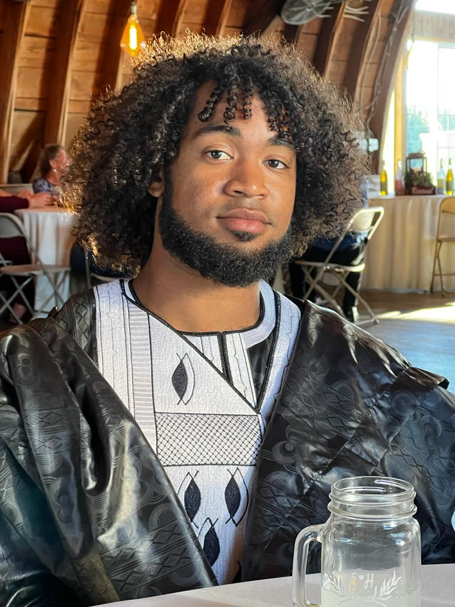

President's Postdoctoral Scholar, UC Berkeley
Google Scholar | arXiv | CV
ogunnaike — at — berkeley.edu
Massachusetts Institute of Technology
PhD, Physics
Advisors: Leonid Levitov and Jong Yeon Lee
2018 — 2024.
Oxford University
MSc, Philosophy of Physics
Advisor: Simon Saunders
2017 — 2018.
Harvard University.
B.Sc. Physics, B.Sc. Mathematics, magna cum laude
2013 — 2017.
I am a Presidential Postdoctoral Fellow at the University of California, Berkeley.
Ensemble Symmetry: Tower of States and Hierarchy of Information Dynamics
O. Ogunnaike, R. Lohar, J.Y. Lee
In preparation
Measurement-Induced Phase Glass
O. Ogunnaike, E. Altman
In preparation
Three-Body Bound States of Quantum Particles: Higher Stability Through Braiding
S. Fisher, O. Ogunnaike, L. Levitov
April 2024
PhysRevA.109.043323
Unifying Emergent Hydrodynamics and Lindbladian Low Energy Spectra across Symmetries, Constraints, and Long-Range Interactions
O. Ogunnaike, J. Feldmeier, J.Y. Lee
Nov. 2023
PhysRevLett.131.220403
Collective excitations in chiral Stoner magnets
Z. Dong, O. Ogunnaike, L. Levitov
May 2023
PhysRevLett.130.206701
Isospin-and momentum-polarized orders in bilayer graphene
Z. Dong, M. Davydova, O. Ogunnaike, L. Levitov
February 2023
PhysRevB.107.075108
Charge Sharpening Via tower of States In Replica SSB
APS March Meeting Talk
APS March Meeting
Anaheim, CA. 19 Mar 2025.
Measurement-Induced Phase Transitions & Spontaneous Symmetry Breaking
Invited Seminar Talk
National Society of Black Physicists Conference
Houston, TX. 15 Nov 2024.
Dynamics from Dispersion: A Versatile Tool”
Invited Seminar Talk
Cambridge Condensed Matter Physics Seminar
Cambridge University, Cambridge, UK. 7 Feb 2024.
Dynamics from Dispersion: A Versatile Tool
Invited Seminar Talk
Yale Condensed Matter Physics Seminar
Yale University, New Haven, CT. 21 Dec 2023.
Dynamics from Dispersion: A Versatile Tool
Invited Seminar Talk
Maryland Quantum-Thermodynamics Hub Seminar
College Park, MD, 13 Dec 2024.
Dynamics from Dispersion: A Versatile Tool
Invited Seminar Talk
Perimeter Institute Quantum Matter Seminar
Waterloo, Canada, 28 Nov. 2023.
Directed Reading Program
Head organizer and graduate mentor for five MIT Physics undergraduate students who wanted to take on a directed reading project over IAP, MIT's winter term
MIT, Winter 2019-2023.
National Society of Black Physicists
Co-founder of Harvard-MIT and UC Berkeley chapters of the National Society of Black Physicists. Organized internal mentoring programs, prepare students to present research at the annual NSBP conference, and helped plan Quantum Noir Harvard conference (2024).
MIT, UC Berkeley 2020-Present.
Harvard College Resident Tutor
Oversaw undergraduates in a Harvard College dormitory; planned study breaks and outings; academically advised 10 sophomores students per year; oversaw support on matters of race, and lead fellowship advising for four years.
Harvard, 2018-2024.
Makinde’s Quantum World
Poetry collaboration with Cambridge, MA-based poet Miriam Manglani as part of Poetry of Science, a project to connect local scientists and poets of color.
Poetry of Science, Cambridge, MA, Summer 2021.
MIT News
Radio Interview
How to Quantify Entanglement
Seminar Talk
Oxford Philosophy of Physics Graduate Seminar
Oxford, UK, 27 May. 2018.
HSSP S15662, General Relativity and Black Holes MIT, Summer 2023. Course head. Summer course for advanced high schoolers offered through MIT and developed over years of mentoring undergraduates through related projects. Course Notes
EDGEx Summer Lab-Based Projects Course MIT, Summer 2023,2024. Course head. Undergraduate introductory laboratory physics for incoming MIT first-years.